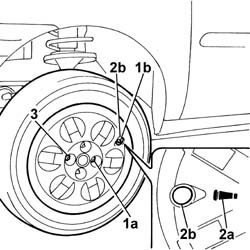

4450B02 left front wheel r r
- Path
- Procedures > 44 SUSPENSION AND WHEELS > 4450 WHEELS AND HUBS > 4450B wheels and components > 4450B02 left front wheel r r
- Kind
- repair procedure (removal / refitting; the operation number is the code)
- Applies to
- all engines; all production periods
- Interactive page
- https://sloeber94.github.io/elrnDB-fDbl/en/#/2584770
Applies to: all engines; all production periods
 Removing
Removing
 Refitting
RefittingPosition the vehicle on a lift.
Undo the fixing bolts and remove the wheel, complete with hub cap (if fitted).
Applies to: all engines; all production periods
Refitting
Removing1. Fit the wheel and fit the first bolt (1a) in the opening closest to the inflation valve (1b).
2. Fit the hub cap (if fitted), making sure that the symbol (2a) on the rear of the cover coincides with the inflation valve so that the valve protrudes through the opening (2b).
3. Fit the remaining bolts without tightening them fully.

Applies to: all engines; all production periods
Lower the vehicle so that the wheels rest on the ground.
Tighten the steel rimmed wheel bolts to the recomended torque.
 | Fastening | Component | Ø | Value (daNm) |
|---|---|---|---|---|
- | Bolt | FRONT WHEEL FIXING BOLT | M12 x 1.25 | (Steel rim) 8.6 |
Tighten the alloy rimmed wheel bolts to the recommended torque.
| Fastening | Component | Ø | Value (daNm) |
|---|---|---|---|---|
- | Bolt | FRONT WHEEL FIXING BOLT | M12 x 1.25 | (Alloy rim) 9.8 |
Remove the vehicle from the lift.
Topics that link to this page (21)
- 1008a42 GEARBOX SIDE POWER UNIT RIGID SUPPORT - R.R.
- 1008b30 GEARBOX SIDE SUPPORT FLEXIBLE MOUNTING(S) - REPLACE
- 2110D53 left hand flange on differential - r+r
- 2710A40 l/h or r/h drive shaft (one) - r + r
- 3310A30 FRONT BRAKE CALIPER (one) - R.R.
- 3310A57 front brake calliper bracket - r r
- 3330E10 FLEXIBLE PIPE (one), left or right, to front brake calipers - R.R .
- 3330E52 RIGID PIPE from master cylinder to LEFT front brake - R.R.
- 3330E53 RIGID PIPE from master cylinder to RIGHT front brake - R.R.
- 3340A30 rpm sensor (one) of one l/h or r/h front wheel - r+r
- 3340B55 central brake pipe to lh - r r
- 4410A12 front suspension damper (one), lh or rh - for mcpherson strut system - includes dismantling/re-building of assembly at bench r r
- 4410B40 lower wishbone (with balljoint) of left or right front suspension (one) - r+r -check wheel geometry separately
- 4410B64 TRACK ROD END (ONE) ON FRONT STEERING KNUCKLE, LEFT OR RIGHT - REPLACE.
- 4450B04 right front wheel r r
- 4450B06 left rear wheel r r
- 4450B08 right rear wheel r r
- 4450B12 front or rear wheels (two) - r+r
- 4450B13 rear wheels(2) r r
- 4450B14 wheels (four) - r+r
- 4450C32 one front wheel hub bearing, lh or rh - replace